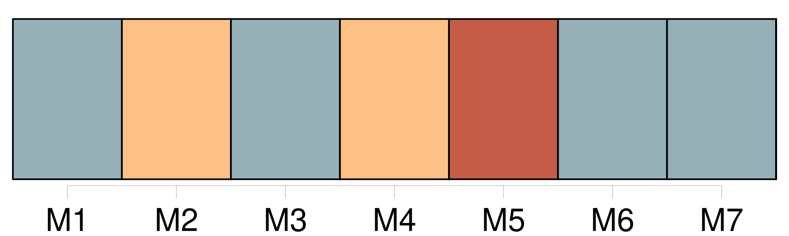
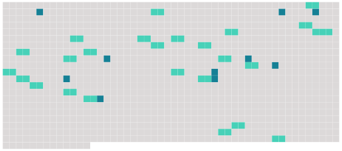

Longueur nb maillons : 35 mentions |
 |
La faculté d'adopter ne pourra être exercée qu'envers l'individu à qui l'on aura, dans sa minorité et pendant six ans au moins, fourni des secours et donné des soins interrompus ou envers celui qui aurait sauvé la vie à [l'adoptant] , soit dans un combat, soit en [le] retirant des flammes ou des flots.
Il suffira, dans ce deuxième cas, que [l'adoptant] soit majeur, plus âgé que l'adopté, sans enfans ni descendans légitimes ; et s' [il] est marié, que [son] conjoint consente à l'adoption. [4 phrases]
L'adoption conférera le nom de [l'adoptant] à l'adopté en l'ajoutant au nom propre de ce dernier. [1 phrases]
L'adopté restera dans sa famille naturelle, et y conservera tous ses droits : néanmoins le mariage est prohibé [1 phrases]
L'obligation naturelle, qui continuera d'exister entre l'adopté et ses père et mère, de se fournir des alimens dans les cas déterminés par la loi, sera considérée comme commune à [l'adoptant] et à l'adopté, [l'un] envers l'autre. [1 phrases]
L'adopté n'acquerra aucun droit de successibilité sur les biens des parens de [l'adoptant] ; mais il aura sur la succession de [l'adoptant] les mêmes droits que ceux qu'y aurait l'enfant né en mariage même quand il y aurait d'autres enfans de cette dernière qualité nés depuis l'adoption. [1 phrases]
Si l'adopté meurt sans descendans légitimes, les choses données par [l'adoptant] , ou recueillies dans [sa] succession, et qui existeront en nature lors du décès de l'adopté, retourneront à [l'adoptant] ou à [ses] descendans, à la charge de contribuer aux dettes, et sans préjudice des droits des tiers.
Le surplus des biens de l'adopté appartiendra à ses propres parens ; et ceux -ci excluront toujours, pour les objets même spécifiés au présent article, tous héritiers de [l'adoptant] autres que [ses] descendans. [1 phrases]
Si du vivant de [l'adoptant] , et après le décès de l'adopté, les enfans ou descendans laissés par celui -ci mouraient eux -mêmes sans postérité, [l'adoptant] succédera aux choses par [lui] données, comme il est dit en l'article précédent ; mais ce droit sera inhérent à la personne de [l'adoptant] , et non transmissible à [ses] héritiers, même en ligne descendante. [3 phrases]
[La personne] [qui] se proposera d'adopter, et celle qui voudra être adoptée, se présenteront devant le juge de paix du domicile de [l'adoptant] , pour y passer acte de leurs consentemens respectifs. [1 phrases]
Une expédition de cet acte sera remise, dans les dix jours suivans, par la partie la plus diligente, au commissaire du Gouvernement près le tribunal de première instance dans le ressort duquel se trouvera le domicile de [l'adoptant] , pour être soumis à l'homologation de ce tribunal. [3 phrases]
° si [la personne] [qui] se propose d'adopter, jouit d'une bonne réputation. [7 phrases]
Dans les trois mois qui suivront ce jugement, l'adoption sera inscrite, à la réquisition de l'une ou de l'autre des parties, sur le registre de l'état civil du lieu où [l'adoptant] sera domicilié. [2 phrases]
Si [l'adoptant] venait à mourir après que l'acte constatant la volonté de former le contrat d'adoption a été reçu par le juge de paix et porté devant les tribunaux, et avant que ceux -ci eussent définitivement prononcé, l'instruction sera continuée et l'adoption admise s'il y a lieu.
Les héritiers de [l'adoptant] pourront s'ils croient l'adoption inadmissible, remettre au commissaire du Gouvernement tous mémoires et observations à ce sujet. |
 |
Il est possible de télécharger la ressource sur la page Ortolang |
Si vous avez des questions ou vous voyez des erreurs, merci d'envoyer un mail à silvia.federzoni89@gmail.com |